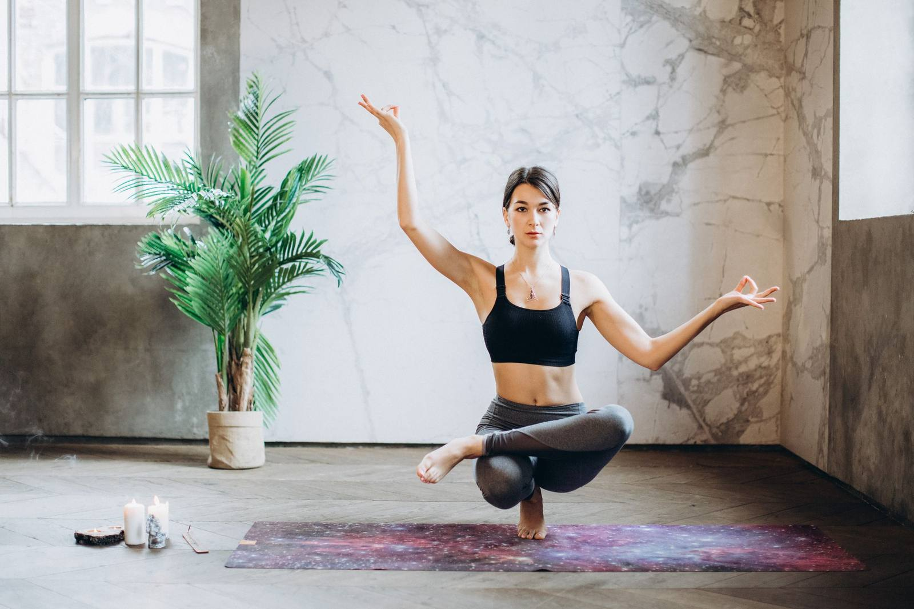
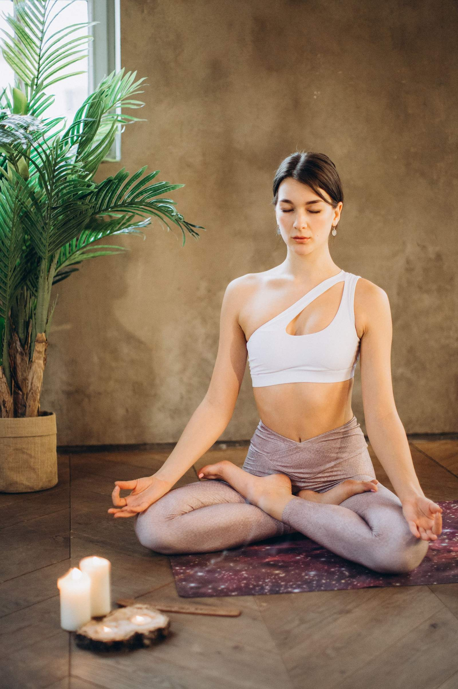
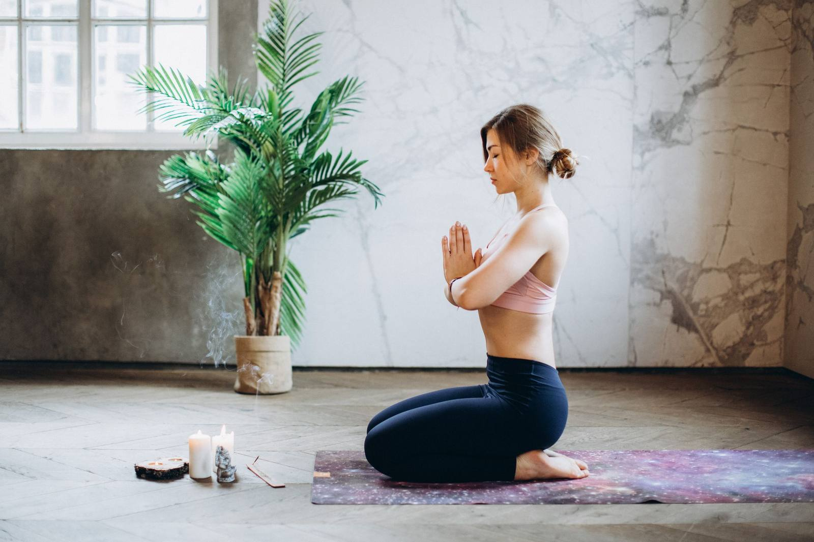
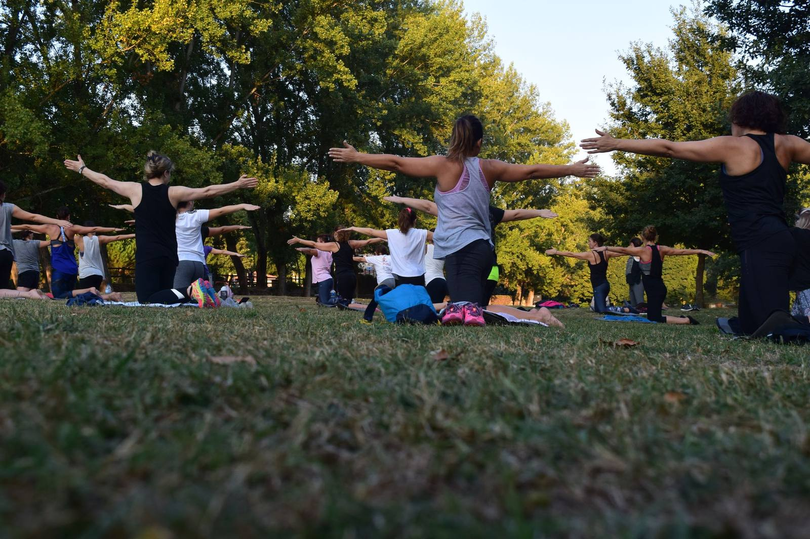
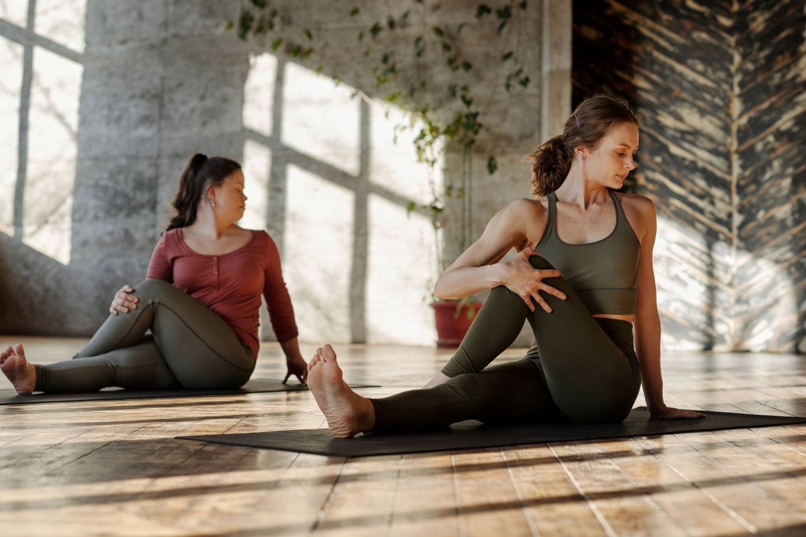
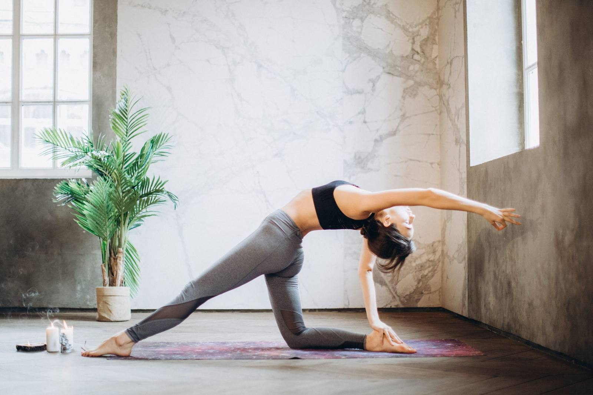
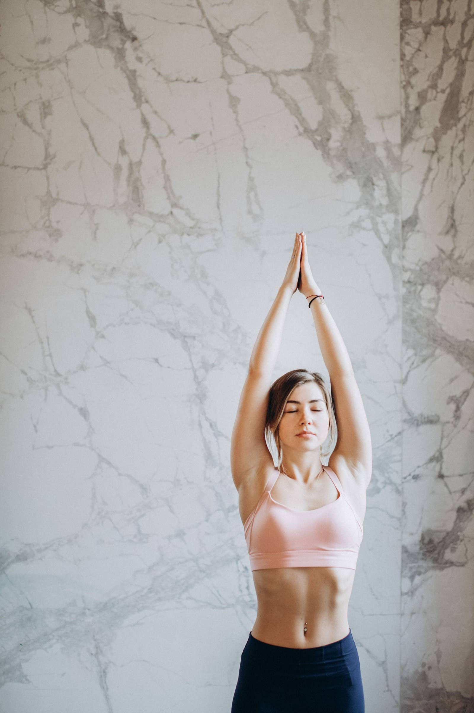
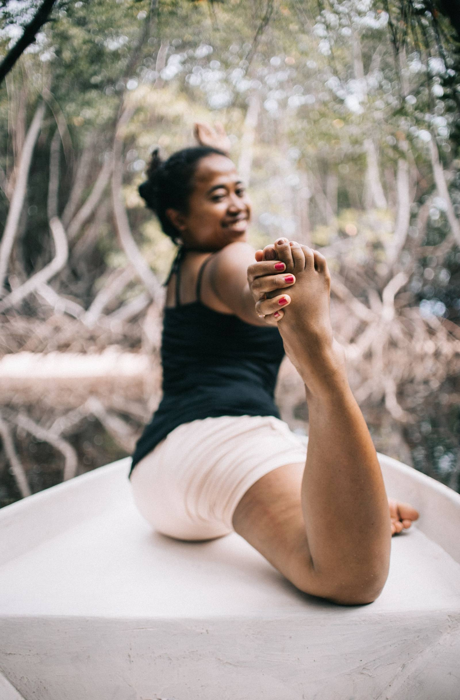

The body steadies
Warmth, strength, and a little more ease in how you stand and rest. Nothing extreme. A body that feels more possible to live in.

Yoga · Barcelona
Yoga Flames · a shamanic approach
Modern yoga, breathwork, and mindful movement for busy lives. Recenter, ground, and transform from the inside out.
The practice
Yoga here is not a performance. It is a way of meeting the body, and the quieter signals under the noise. People often notice the change first in ordinary places: sleep, patience, the walk home.
Warmth, strength, and a little more ease in how you stand and rest. Nothing extreme. A body that feels more possible to live in.
Breath gives the day edges. There is more room between a thought and whatever you do next.
Practice is a place to hear the voice that hurries you, and to answer it with something kinder and more exact.
When you can feel yourself, you interrupt less. You listen longer. Yes and no get simpler.
A nervous system with a way back down is practical. You recover sooner and spend less of the day braced.
Consistency is quiet. A practice you can return to becomes a base for the rest of what you are making.
None of this arrives in a single class. It arrives because you come back.
A story worth retiring
Range, strength, and steadiness are what practice grows. They are not a ticket you have to buy first. Waiting until you look like a photograph is how people never start.
Hips, spine, and shoulders that serve walking, sitting, and lifting. Not a pose for a camera.
Muscles that hold you up in ordinary life, built with the weight of your own body.
More air, less holding, and a clearer sense of energy through the afternoon.
Repeated slow breath and honest movement give the body a route out of high alert.
Joints kept moving, attention kept kind. Practice does not stop time. It changes how you spend it.
The requirement is willingness, and a mat or a clear patch of floor.

About
Yoga isn't just about shapes on a mat; it’s a lifelong anchor. At 31, during a season of transition, the practice found its true roots in me—evolving from a physical routine into a grounding force and a way of life.
Drawing from Hatha, Vinyasa, and Restorative traditions, my teaching blends movement with stillness. This is a warm, mystical, and welcoming space to listen to your body, drop the noise, and discover what yoga means for you.
Languages she teaches in are not confirmed on this test page.
Longer paths
Working titles for this test layout. Dates, prices, group size, and any recognition are placeholders until Martina confirms them.
For people who want to guide, as well as practise
A longer course in shamanic yoga, movement, and the craft of holding a room. A small group in Barcelona, with time between meetings to live what you study.
[payment plan]. Early place, if offered: [price].
Read the Flame PathBreath, ritual, and one season of practice
A shorter series for people who want a shamanic frame around movement they already love: listening, simple ritual, and a rhythm that follows the time of year. This is not a teacher training.
[payment plan].
Read the Ember CircleClasses
These five names are working titles, so the test site has the same kind of class list a student would browse. Martina can rename every one of them.
Tailored 1-on-1 guidance, online or in-person, designed entirely around your body, schedule, and goals.
See the weekOn-demand access to a growing library of recorded flows, breathwork guides, and practices whenever you need them.
See the weekDeep-dive asana workshops and immersive local retreats to disconnect from the chaos and reconnect with your core.
See the weekThe group moves as one rhythm. A shared count does some of the work, and people of different experience can still be in the same room.
It suits anyone who likes the feeling of practising beside other people, without being asked to keep up with a trick.
See the weekAn early class whose shape changes. Some mornings are quiet. Some move. The idea is to begin the day before the day begins you.
You do not need a perfect corner of the house. You need a little floor, and a willingness to be slightly unfinished at that hour.
About online practiceTrue well-being shouldn’t be a luxury. YogaFlames features flexible, inclusive pricing tiers designed to be accessible to anyone—because your practice should support your life, not stress your wallet.



Listening
Martina’s teaching leans on a shamanic sensitivity: the sense that a room, a body, and a landscape each have a tone. Class is a place to notice that tone and to answer it with movement and breath.
The tools are plain. Weight into the floor. Breath that can lengthen. Attention that can stay with one sensation instead of chasing the next.
You do not need a background in ritual. Curiosity is enough, and so is a day when you feel nothing in particular. Both are welcome.
Small groups · Barcelona and online
Company
There are practices that want other people nearby. Not so you can perform for them. So you can remember that attention is contagious, and that rest is easier when someone else is also resting.
Circles are unhurried. We move, we sit, and sometimes we are quiet. You can arrive tired. You can leave early if you need to. Nobody has to explain their week.
This is a room for adults who want company in the practice. It is not a childcare class and it is not a therapy group.
Open circles · see the week




Weekly
Group classes, private sessions, workplaces, and gatherings. Barcelona, and online beyond it. Every time and place below is a placeholder.
| Day | Practice | Where | Time |
|---|---|---|---|
| Tuesday | Hearth Hatha | [neighbourhood], Barcelona | [time] |
| Thursday | Flame Flow | [neighbourhood], Barcelona | [time] |
| Saturday | Shamanic Lab | [studio] | [time] |
| Sunday | Led Circle | [neighbourhood], Barcelona | [time] · [frequency] |
| Weekday | Dawn Practice | Online | [time] |
Private sessions are arranged one by one. Read how they work.
A few moods from the practice. These photographs are not from Martina’s classes.





Voices
These lines were written for the test layout. They are not reviews, not quotations from real students, and not ratings from any website.
“I arrived with a noisy head and left with one clear breath I could take into the evening. The pace never asked me to perform.”
“What stayed was the permission to be a beginner in the room. Nothing was rushed, and nothing was vague.”
A second cluster, same rule. Still invented. Still not attached to a real person.
“The circle felt like a kitchen table more than a stage. I could put the day down.”
“I am not bendy, and that was never the point. I learned where my feet actually are.”
“Online, early, before the inbox. It is a small door I can still find on a difficult week.”
“The quiet parts were as useful as the postures. I did not have to pretend a ritual I do not have.”
“After a few weeks I noticed I was less sharp with the people I live with. That was the surprise.”
“I came for the movement and stayed for the way the room settles. I want the real times before I promise a season.”
When you are ready, the door is a message.
Contact
Take the first step toward your practice today. Let’s connect.
Phone [phone] · [hours]
Studio [address]